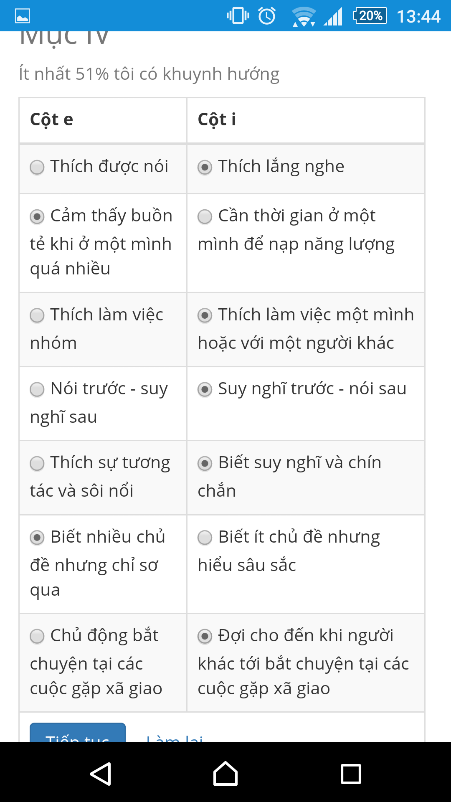

Trắc nghiệm tính cách ColorQ Cho đến nay, hệ thống đánh giá tính cách MBTI vẫn luôn là sự lựa chọn hàng đầu khi một ai đó muốn tự khám phá, hiểu hơn về bản thân mình. Tuy nhiên, chúng ta vẫn có những lựa chọn bổ sung thêm hoặc thay thế cho MBTI, một trong số đó là đánh giá tính cách Color Q. Đây là một dạng đánh giá tương đối đơn giản hơn MBTI, số câu hỏi ngắn hơn mà kết quả lại tương tự MBTI. Phương pháp này được phát minh và phát triển bởi Shoya Zichy, một diễn giả và nhà huấn luyện có danh tiếng trên thế giới, bà cũng từng tham gia đào tạo cho Prudential và một số tập đoàn lớn của Mỹ. Bây giờ chúng ta đi vào tìm hiểu về phương pháp đánh giá Color Q. Nguyên tắc của phương pháp này dựa trên 6 nhóm : Xanh dương – Xanh lá, Vàng – Đỏ, Hướng nội – Hướng ngoại. Tuy vậy, chính yếu nhất vẫn là 4 nhóm đầu, 2 nhóm sau chỉ mang tính phân định. Ở 4 nhóm đầu, chúng ta có 2 cặp màu, phụ thuộc vào cách lựa chọn của chúng ta để chọn 1 màu chính yếu và 1 màu thứ yếu. Vàng (Golden) : Vững chắc, thực tế và có trách nhiệm, màu Vàng là xương sống của mọi tổ chức từ đoàn thể đến cộng đồng. Họ là những nhà quản lý và bảo vệ con người, hàng hóa, dịch vụ và kế hoạch của xã hội. Họ đánh giá cao các quy trình, có thể tuân theo mệnh lệnh của cấp trên và luôn cập nhật mọi thứ có liên quan đến hệ thống, từ việc chăm lo cho trẻ nhỏ cho đến việc điều hành những đơn vị lớn. Màu Vàng tạo ra các danh mục, để ý từng chi tiết và có tiếng là chịu khó theo đuổi cũng như động viên những người khác đạt mục tiêu cụ thể. Họ không thích sự thay đổi, những lý thuyết trừu tượng và ý tưởng mới mà chưa kiểm chứng tính đúng sai. Trong vai trò lãnh đạo, họ xuất sắc trong việc thiết lập các quy chế và sẵn sàng chịu trách nhiệm lãnh đạo cả trong công việc cũng như các hoạt động thiện nguyện xã hội để chắc chắn rằng mọi kế hoạch đều đang đi đúng hướng. Đỏ (Red) : Chú trọng vào hành động, linh hoạt và quan tâm đến thực tại, màu Đỏ cần được tự do theo đuổi những gì mình tin tưởng bất chấp người khác có nghĩ gì. Lạnh lùng và can đảm, họ tự hào về khả năng xoay sở trong khủng hoảng tốt hơn những người còn lại. Họ là những nhà đàm phán và dàn xếp xuất sắc, họ thường làm trong các ngành nghề cho phép sự tự do hành động, mang lại nhiều điều mới mẻ và bất ngờ. Với họ, làm việc phải làm những việc mình thấy thích thú và có môi trường mở. Màu Đỏ không thích sự sắp đặt và phân biệt. Trong vai trò thủ lĩnh, họ đem đến sự sôi nổi và thiết thực. Họ theo dõi hệ thống, phát hiện những sai sót có thể mắc phải và ngay lập tức điều chỉnh. Xanh dương (Blue) : Thích lý thuyết, đầy cạnh tranh và luôn mong muốn tìm kiếm tri thức, phát triển khả năng, màu Xanh dương có khả năng giải quyết các vấn đề phức tạp, đòi hỏi lý thuyết và thiết kế các hệ thống mà không ai có thể sánh kịp. Họ tìm kiếm tri thức cho bản thân mình và sẵn lòng thử thách, thẩm tra ý tưởng cũng như con người. Phản ứng đầu tiên của họ là phê bình và so sánh các tiêu chí của mình với những người, sự vật và sự việc. Họ vô cùng kỹ lưỡng trong suy nghĩ và ngôn từ, chú tâm vào tương lai, chỉ tin tưởng vào sự hợp lý logic, không phải là những quy trình hay phép tắc trong quá khứ. Trong vai trò lãnh đạo, màu Xanh dương nhìn xa trông rộng và có thể hoàn thành rất tốt công việc ở những vị trí đòi hỏi tư duy chiến lược. Phát triển một ý tưởng hay tổ chức là niềm yêu thích của họ. Từ đó, họ tiến hành với một niềm vui nho nhỏ được duy trì và thống nhất, hoặc giải thích sự rắc rối của một kế hoạch, những điều đã quá rõ ràng với họ. Xanh lá (Green) : Là những người biết đồng cảm, mang tinh thần nhân văn và truyền cảm tốt, họ rất xuất sắc trong những lĩnh vực cần sự quan tâm đến con người. Màu Xanh lá làm việc hiệu quả nhất trong môi trường đòi hỏi chú trọng vào ý tưởng, có thể giúp đỡ, khuyến khích và trung lập. Họ thích sự đa dạng và cơ hội mang lại những thay đổi thật sáng tạo cũng như có thể tương tác đến người khác. Với khả năng thiên phú có thể nắm bắt động cơ của người khác, họ đặc biệt có thể gây ảnh hưởng và trợ giúp người khác trở nên tốt đẹp hơn. Ngoài ra, họ cũng rất giỏi trong giao thức bằng ngôn từ và chữ viết, người ta có thể thấy họ trong các ngành nghề như viết văn, phát thanh viên truyền hình và cây bút hồi ký. Trong vai trò lãnh đạo, màu Xanh lá luôn là những người phát ngôn nhiệt thành cho tổ chức hoặc sự nghiệp mình đã chọn lựa. Họ tái thiết thế giới thành một thứ gì đó rất đặc biệt, tỏa ra sức hút lãnh tụ độc nhất vô nhị có thể lôi cuốn mọi thứ về với lý tưởng của họ. Cách lựa chọn nhanh như sau : Xác định mình là người Hướng nội hay Hướng ngoại (xu hướng nào trội hơn). Đọc các mô tả về 4 màu, chọn ra 1 màu mô tả đúng với bạn nhất, đây là màu chính. Xem màu chính vừa chọn thuộc cặp nào, loại bỏ màu còn lại trong cùng 1 cặp. [Nếu là Xanh dương thì loại bỏ Xanh lá, nếu là Vàng thì loại bỏ Đỏ và ngược lại.] Đọc và chọn ra 1 màu thuộc 2 màu còn lại mô tả đúng với bạn nhất, đây là màu phụ. Nhóm tính cách của bạn theo thứ tự của xu hướng trội, màu chính và màu phụ. Sau khi xác định được nhóm tính cách của mình theo Color Q, chúng ta có thể so sánh với nhóm tính cách theo MBTI để chắc chắn hơn vào kết quả. Nếu 2 kết quả giống nhau, chúng ta hoàn toàn có thể tin tưởng như nhìn thấy chính mình trong gương. Nếu 2 kết quả không khác nhau quá xa thì nên tham khảo cả 2 để chọn cho mình nhóm tính cách phù hợp nhất. Hướng ngoại – Vàng – Xanh dương ~ ESTJ Hướng nội – Vàng – Xanh dương ~ ISTJ Hướng ngoại – Vàng – Xanh lá ~ ESFJ Hướng nội – Vàng – Xanh lá ~ ISFJ Hướng ngoại – Đỏ – Xanh dương ~ ESTP Hướng nội – Đỏ – Xanh dương ~ ISTP Hướng ngoại – Đỏ – Xanh lá ~ ESFP Hướng nội – Đỏ – Xanh lá ~ ISFP Hướng ngoại – Xanh dương – Vàng ~ ENTJ Hướng nội – Xanh dương – Vàng ~ INTJ Hướng ngoại – Xanh dương – Đỏ ~ ENTP Hướng nội – Xanh dương – Đỏ ~ INTP Hướng ngoại – Xanh lá – Vàng ~ ENFJ Hướng nội – Xanh lá – Vàng ~ INFJ Hướng ngoại – Xanh lá – Đỏ ~ ENFP Hướng nội – Xanh lá – Đỏ ~ INFP Nhiều bạn có thể thắc mắc : “Nếu 2 nhóm tính cách sau khi so sánh thấy khác nhau (tuy không nhiều) thì làm thế nào biết được mình thuộc nhóm tính cách nào ?”. Thật ra, nội tâm con người rất phức tạp, không thể một vài chữ mà nói hết được, tôi khuyên bạn chẳng nên tìm ra sự tuyệt đối trong nội tâm của mình. Đây là hiện tượng “đa tính cách” (khác rất xa với khái niệm “đa nhân cách” vốn được xem là một bệnh lý !). Hiện tượng này không có gì ghê gớm, nó thể hiện cách phản ứng đa dạng của một số người mà thôi. Thông thường, tôi phải xác định theo 2 tầng như sau : Tính cách xã hội : Tính cách thể hiện ngoài xã hội. Tính cách thân thuộc : Tính cách thể hiện với người thân, bạn bè thân. Nếu bạn có MBTI là ENTP mà Color Q lại tương đồng INTP (Hướng nội – Xanh dương – Đỏ), bạn đừng vội lo lắng mà hãy tự mình nhìn nhận đâu là tính cách xã hội và đâu là tính cách thân thuộc của mình ? Đôi khi chúng ta không thể hiện bên ngoài xã hội rằng chúng ta hướng nội, chỉ có người nhà biết chúng ta khá rụt rè, nhút nhát, ít nói … mặc dù ngoài đời thì nói như sáo, ít chịu ở yên. Dù sao thì “Không có người xấu, chỉ có người không chịu hoàn thiện tính cách của mình! ”. (ST)
Nói tóm tắt : NF : Lý tưởng hóa / tâm lý sâu NT : Lý tính / Nhìn xa trông rộng SF : Người truyền đạt - diễn giải ST : Lý tính / Thực nghiệm Lessons from a Masters In Business Administration: Myers-Briggs Type Indicator | Professor Nerdster
Bạn có thể nói rõ thêm ở chỗ màu phụ được không? Tại sao kết hợp với màu chính lại ra kết quả như thế kia?
@ @Huyên Linh: Color Q này mình chỉ tìm hiểu bề nổi thôi chưa tìm hiểu bề chìm của nó nên mình chưa thể giải thích cho bạn được. Bạn có thể hỏi bác Google.
Mình google rồi đó chớ :v Hmm, để khi nào rảnh hơn mình sẽ đọc ~ Mình thích câu này ~ mình vẫn hay quan niệm thế ~
 Vấn đề chung của bài test này và kha khá các bài test MBTI tràn lan khác chính là sự bề nổi. Vấn đề không nằm ở người làm mà nằm ở sự thiếu chiều sâu của câu hỏi, kế đến là sự thiếu tương đương giữa hai vế, chẳng hạn, mình vừa Sôi nổi, thích tương tác, vừa Sâu sắc và biết suy nghĩ, vậy mình chọn cái nào? Test như thế này thì khác nào có ý rằng Người Sôi nổi thích tương tác thì Thiếu sâu sắc và ngược lại?
@Thuytien: Bài test này được xây dựng dựa vào cuốn sách " Nghề nào cho bạn-nghề nào cho tôi". Nếu bạn ko tin thì hãy mua quyển sách đó về và làm test. Nhưng bài test sẽ giống như trang web đó. Còn vấn đề bạn nói là cả 2 cột bạn đều có thì hãy đọc lại HƯỚNG DẪN SỬ DỤNG TRƯỚC KHI DÙNG nhé. 51% bạn có khuynh hướng gỉ?.
Ồ, mình còn chưa nói gì về chuyện tin hay không cơ mà.. đừng suy diễn chứ. Tất cả những gì mình nói là dựa vào trải nghiệp mình đã và đang có, và thực tế, nó chính là như vậy. Bạn có chắc chắn rằng, Người sôi nôi thì không Sâu sắc? Dĩ nhiên là không phải không, vì hai từ đó thậm chí còn không thuộc cùng trường từ vựng. Vậy mình luôn sôi nổi, và cũng luôn sâu sắc, đó là bản chất của mình, mình nên chọn? Không thể nào đặt vào 2 cột 2 mệnh đề không tương đương được. Và ai nói sách thì luôn đúng mà bạn phải dẫn chứng sách vào làm gì? Please understand me II có bài test tận 70 câu mà còn đầy lỗ hổng kìa